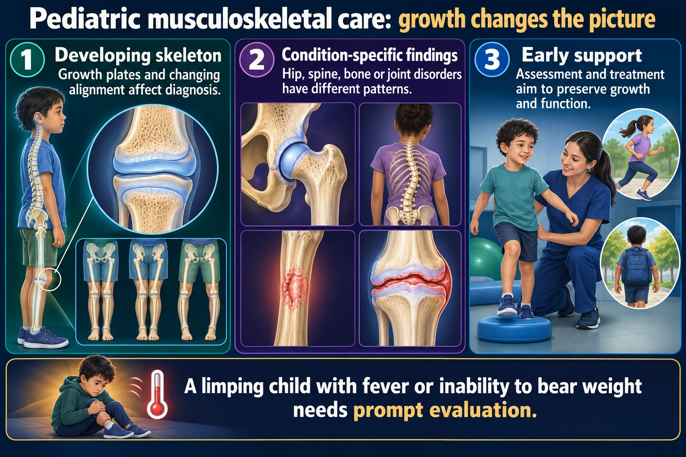
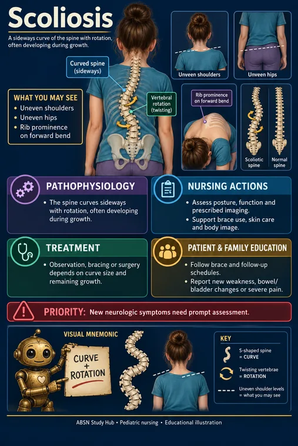
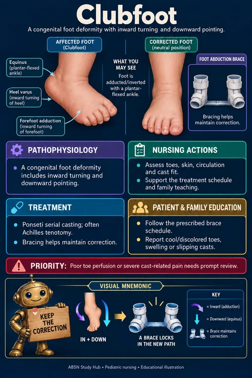

🦴 Pediatric Musculoskeletal
Growing bone breaks differently. Hip dysplasia, scoliosis, casts, and the pain that means compartment syndrome.
🧬 Why children's bones differ

The growth plate is why a pediatric fracture is taken seriously even when it looks minor - damage there can shorten the limb for good.
A limping child with fever or inability to bear weight needs prompt evaluation.
Read the picture
Developing skeleton
Growth plates and changing alignment affect diagnosis.
Condition-specific findings
Hip, spine, bone or joint disorders have different patterns.
Early support
Assessment and treatment aim to preserve growth and function.
Hip concerns
Asymmetry, limited motion or gait changes need age-appropriate assessment.
Spinal concerns
Curvature and growth stage influence management.
Neurovascular safety
Pain, sensation, movement and perfusion are essential after injury or casting.

A child’s bone is still growing, so the growth plate is the weakest point. An injury that would sprain an adult ligament fractures a child’s physis instead.
Growth plate damage can affect limb length permanently - which is why pediatric fractures are taken seriously even when they look minor.
Children’s bones also bend rather than snap — greenstick and buckle fractures — and they heal considerably faster than adults’.
🚨 Fracture patterns that suggest abuse
- Spiral fractures in a child not yet walking
- Fractures at different stages of healing
- Rib, femur or humerus fracture in an infant
- A history that does not match the injury, or that keeps changing
- Delay in seeking care
Nurses are mandatory reporters. Suspicion is enough - proof is not required. Document objectively and report.
🚨 The 6 Ps and compartment syndrome
Neurovascular checks distal to any cast or injury:
- Pain — especially out of proportion, or on passive stretch
- Pallor
- Pulselessness
- Paraesthesia — tingling, numbness
- Paralysis
- Poikilothermia — the limb feels cool
Pain that keeps increasing under a cast and is unrelieved by analgesia is compartment syndrome until proven otherwise. Report immediately. Do not elevate above heart level and never ignore it.
Pain is the earliest sign. Pulselessness is very late. Waiting for an absent pulse means waiting too long.

✅ Cast care
- Elevate and ice for the first 24–48 hours
- Handle a wet cast with the palms, not fingertips — fingers leave dents that press on skin
- Support on pillows; allow air circulation; no plastic covering while drying
- Petal the edges with tape to stop irritation
- Keep it dry — cover for bathing
- Never put anything down inside a cast to scratch - it breaks skin you cannot see and cannot treat
- Report a hot spot, foul smell, or drainage — infection underneath
🧵 Traction
- Weights hang free and are never lifted off
- Ropes in the pulley grooves; knots not touching pulleys
- Bryant’s traction — for young children with a femur fracture; hips flexed 90°, buttocks just clear of the mattress
- Buck’s traction — skin traction, can be removed for care
- Skeletal traction is not removed; pin site care per policy
🧠 The conditions
| Condition | Age / signature | Care point |
|---|---|---|
| DDH (hip dysplasia) | Newborn — asymmetric skin folds, unequal knee height, Ortolani/Barlow clunk | Pavlik harness — keeps hips flexed and abducted. Worn nearly all the time; check skin under straps |
| Clubfoot | Birth — foot turned inward and down | Serial casting from birth, changed weekly as the foot corrects |
| Legg-Calvé-Perthes | 4–8 y — painless limp, hip or knee ache | Avascular necrosis of the femoral head; limit weight bearing |
| SCFE | Obese adolescent — hip/knee pain, out-toeing | Non-weight bearing; surgical |
| Scoliosis | Adolescent growth spurt | Forward-bend test, look for a rib hump; brace while still growing |
| Duchenne MD | Boys 3–5 y — Gower sign, calf pseudohypertrophy | Progressive; maintain mobility; watch respiratory and cardiac function |
| Osteogenesis imperfecta | Fragile bones, blue sclerae | Handle with extreme care — lift the whole body, never by limbs |
 🧒 Developmental dysplasia of the hipPicture, memory hook and nursing care →
🧒 Developmental dysplasia of the hipPicture, memory hook and nursing care → 🧒 Legg-Calve-Perthes diseasePicture, memory hook and nursing care →
🧒 Legg-Calve-Perthes diseasePicture, memory hook and nursing care → 🧒 Slipped capital femoral epiphysisPicture, memory hook and nursing care →
🧒 Slipped capital femoral epiphysisPicture, memory hook and nursing care →
🧒 ScoliosisPicture, memory hook and nursing care → 🧒 Duchenne muscular dystrophyPicture, memory hook and nursing care →
🧒 Duchenne muscular dystrophyPicture, memory hook and nursing care →
🧒 ClubfootPicture, memory hook and nursing care →⭐ Scoliosis bracing
Worn most of the day, and it only works while the child is still growing — which is exactly when body image makes adherence hardest.
Address that directly: allow choice in clothing, involve them in the plan, and connect with peers who have worn one. Adherence is the whole treatment.
🎯 NCLEX traps
- Increasing pain under a cast = compartment syndrome. Pain is early, pulselessness is late
- Palms not fingertips on a wet cast; nothing down inside it
- Weights hang free in traction
- Blue sclerae = osteogenesis imperfecta — handle with extreme care
- Spiral fracture in a non-walking infant → report